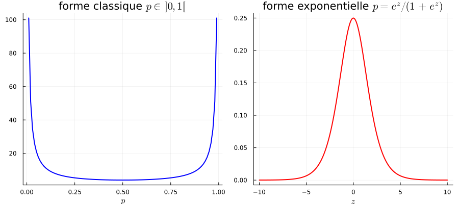

15 L’information de Fisher
15.1 Définitions
Nous avons vu apparaître naturellement la variance du moment dans un modèle exponentiel, à savoir \(\mathrm{Var}_\theta(T)\). Cette quantité s’appelle information de Fisher, parce qu’elle quantifie l’information relative au paramètre \(\theta\) qui est « contenue » dans la distribution \(p_\theta\).
Définition 15.1 (Information de Fisher dans les modèles exponentiels) Dans le modèle exonentiel associé à \(T\), la matrice d’information de Fisher \(I(\theta)\) est la matrice de covariance de \(T\),
\[E_\theta[T(X)T(X)^\top] - E_\theta[T(X)]E_\theta[T(X)]^\top.\]
L’information de Fisher possède de nombreuses expressions alternatives. La plus importante, outre la définition, est qu’on peut interpréter \(I(\theta)\) comme la matrice de covariance du score du modèle.
Définition 15.2 (Fonction de score) Le score est la dérivée de la log-vraisemblance : \[\nabla_\theta \ln p_\theta(x).\]
Dans un modèle exponentiel \(p_\theta(x) = \exp(\langle \theta, T(x)\rangle - \ln Z_\theta)\), nous avons déjà vu que le score est égal à \[T(x) - \nabla \ln Z(\theta). \tag{15.1}\] Le score dépend des observations, et donc est une variable aléatoire. En fait, Équation 13.1 montre que l’espérance du score, \(E_\theta[T(X)] - \nabla \ln Z(\theta)\), vaut précisément zéro : le score est centré. Au vu de Équation 15.1, l’information de Fisher coïncide avec la variance du score. C’est cette dernière définition qu’on retient en général, car elle n’est pas propre aux modèles exponentiels.
Définition 15.3 (Information de Fisher dans les modèles généraux) Dans un modèle statistique général \((p_\theta)_{\theta \in \Theta}\), l’information de Fisher est définie comme la variance du score :
\[ I(\theta) = \mathrm{Var}_\theta(\nabla_\theta \ln p_\theta(X)), \]
pourvu que tout soit bien défini (la densité doit être dérivable, etc.).
On rappelle que le gradient de la fonction \(\ln p_\theta : \mathbb{R}^d \to \mathbb{R}\) est vu comme un vecteur colonne. Par conséquent, la variance de la variable aléatoire \(\nabla_\theta \ln p_\theta(X)\) (qui est centrée) est la matrice \[ \mathbb{E}_\theta[\nabla_\theta \ln p_\theta(X)\nabla_\theta \ln p_\theta(X)^\top].\]
15.2 Borne de Cramér-Rao
Théorème 15.1 (Borne de Cramér-Rao) Pour tout estimateur sans biais \(\hat{\theta}\) de \(\theta\), on a1 \(I(\theta)^{-1} \preceq \mathrm{Cov}_\theta(\hat{\theta})\).
Lorsque le paramètre \(\theta\) est réel, la borne de Cramér-Rao dit que le risque quadratique de n’importe quel estimateur sans biais ne peut pas être plus petit que \(1/I(\theta)\). Les estimateurs sans biais qui atteignent cette borne sont appelés efficaces, ou asymptotiquement efficaces si leur risque quadratique converge vers cette borne.
La borne \(I(\theta)\) est très petite lorsque l’information est très grande, ce qui est intuitif : si les observations portent beaucoup d’information sur le paramètre, le risque quadratique du meilleur estimateur peut certainement être très petit. Inversement, si \(I(\theta)\) est très grande, cela signifie que les observations ne portent pas beaucoup d’information sur le paramètre, et donc que le risque quadratique sera nécessairement assez grand.
Preuve. Commençons par la dimension 1. Comme \(T\) est sans biais, \(\int p_\theta(x)T(x)dx=\theta\). Comme \(\nabla p_\theta = p_\theta \nabla_\theta \ln p_\theta = p_\theta s_\theta\), en intervertissant intégrale et dérivée, on obtient donc \(1 = \int p_\theta (x)s_\theta(x)T(x)dx = E_\theta[s_\theta(X)T(X)]\). Nous avons déjà vu que le score est centré : ainsi, ce dernier terme vaut aussi \(E_\theta[s_\theta(X)(T(X) - \theta)]\). L’inégalité de Cauchy-Schwarz donne alors \[1 \leqslant \sqrt{E_\theta[|T(X)-\theta|^2]I(\theta)}, \] qui est le résultat voulu. Pour la dimension supérieure, il suffit d’appliquer ce résultat à \(\langle y, T(X)\rangle\), qui est un estimateur sans biais de \(\langle y, \theta \rangle\) (ici, \(y\) est n’importe quel vecteur de \(\mathbb{R}^p\)). L’inégalité ci-dessus, après quelques menues manipulations, devient \[\langle y, I(\theta)^{-1}y\rangle \leqslant \langle y, \mathrm{Cov}_\theta(T)y\rangle, \] qui montre bien que \(I(\theta)^{-1} \preceq \mathrm{Cov}_\theta(T)\).
15.3 Interprétation
L’information de Fisher d’un modèle dépend crucialement de comment on paramétrise le modèle, et c’est ce qui a donné lieu à la terrible confusion qui m’a paralysé en cours jeudi matin.
Prenons l’exemple de la loi de Bernoulli, et considérons d’abord sa paramétrisation usuelle, \[ p_\theta(x) = \theta^x(1-\theta)^{1-x}\] avec \(x \in \{0,1\}\), et \(\theta\) est dans \(]0,1[\). La fonction de score est donnée par \((x\ln \theta + (1-x)\ln(1-\theta))'\), soit \(\frac{x}{\theta} - \frac{1-x}{1-\theta}\), ou encore \[ \frac{x}{\theta(1-\theta)} + \frac{1}{1-\theta}, \] et donc l’information de Fisher de ce modèle est égale à la variance de \(X/\theta(1-\theta) + 1/(1-\theta)\), qui vaut \(1/\theta(1-\theta)\) : \[I(\theta) = \frac{1}{\theta(1-\theta)}. \tag{15.2}\]
Maintenant, nous allons paramétriser le modèle de Bernoulli avec les logits : plutôt que de considérer \(p\), nous allons paramétriser \(z = \ln(\theta/(1-\theta))\). La densité de Bernoulli s’écrit alors \[p_z(x) = \frac{e^{zx}}{1+e^z}.\] Comme \(x\) vaut 0 ou 1, on voit que la probabilité d’obtenir 1 est égale à \(\theta = \theta(z) = e^z/(1+e^z)\). Il s’agit donc d’une autre paramétrisation de \(p\), mais celle-ci a l’avantage d’exprimer les lois de Bernoulli sous forme exponentielle, avec \(T(x) = x\). L’information de Fisher dans cette autre paramétrisation du modèle de Bernoulli est donnée par la formule \(\mathrm{Var}_z(X) = \frac{e^z}{(1+e^z)^2}\), soit \[\tilde{I}(z) = \theta(z)(1-\theta(z)). \tag{15.3}\]

Les formules Équation 15.2 et Équation 15.3 (qui sont bien celles que j’ai obtenues en cours ce matin) sont toutes les deux correctes, mais elles ne coïncident pas. Pourquoi ?
La réponse est que \(I(\theta)\) et \(\tilde{I}(z)\) quantifient la quantité d’information sur le paramètre estimé qui et contenue dans les observations, et que le paramètre n’est pas le même dans les deux cas.
- pour le modèle Équation 15.2, le paramètre est \(\theta\). Dans ce cas, l’information contenue dans les observations est maximale lorsque \(\theta\) est proche de 0 ou 1.
- pour le modèle Équation 15.3, le paramètre est \(z\). Dans ce cas, c’est le contraire : on voit que l’information contenue dans les observations est maximale lorsque \(z\) est proche de 0, ce qui correspond à \(\theta = 1/2\).
Considérons les deux modèles en parallèle, dans le régime où la probabilité de succès est très proche de 1, c’est-à-dire \(\theta\) proche de \(1\) ou \(z\) très grand2.
- dans le premier cas, une infime variation de \(\theta\) peut entraîner une grande variation du modèle : par exemple, passer de 99% à 99.999%(une variation de moins de 1%) se verra tout de suite sur les observations.
- dans le second cas, même de grandes variations de \(z\) n’auront aucune incidence sur les données. Passer de \(z = 10\) à \(z = 100\) revient à passer d’une probabilité de succès de 99.99% à 99.99999%.
Autrement dit, la paramétrisation a radicalement changé l’information, parce que le paramètre dans chacun des deux modèles n’est pas le même et ne représente pas la même chose.
Rappelons que (cf Section 21.4) lorsque \(A,B\) sont des matrices symétriques, \(A \preceq B\) équivaut à ce que \(\langle y, Ay\rangle \leqslant \langle y, By\rangle\) pour tout \(y\). ↩︎
à titre d’exemple, toute valeur de \(z\) plus grande que 10 donne un \(\theta(z)\) plus grand que \(99.99\%\).↩︎